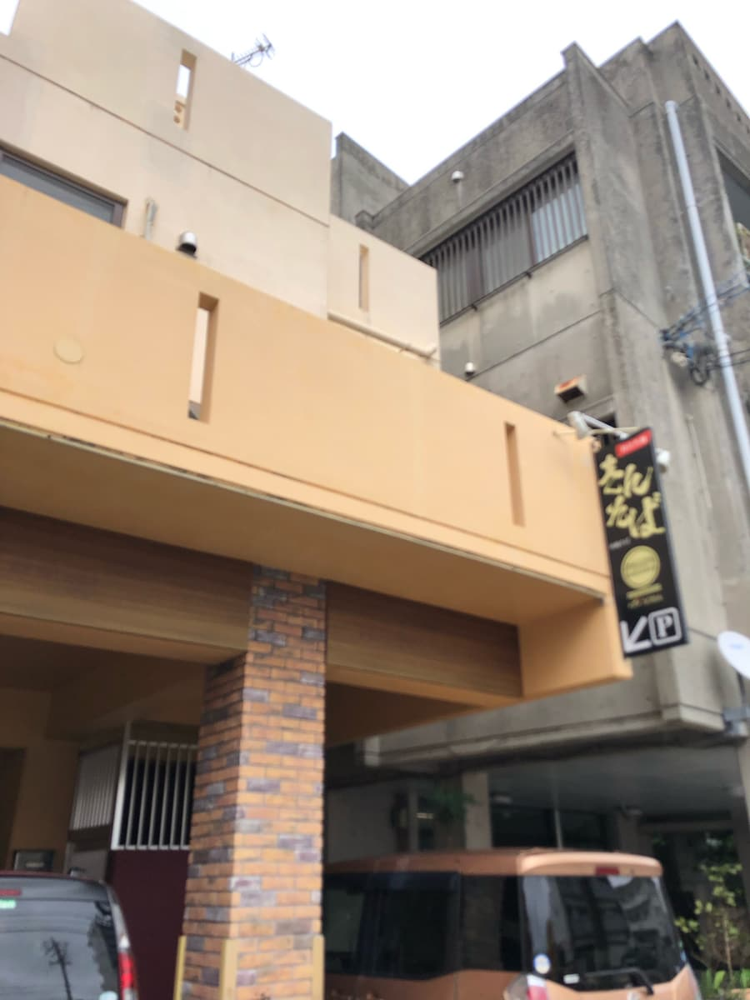
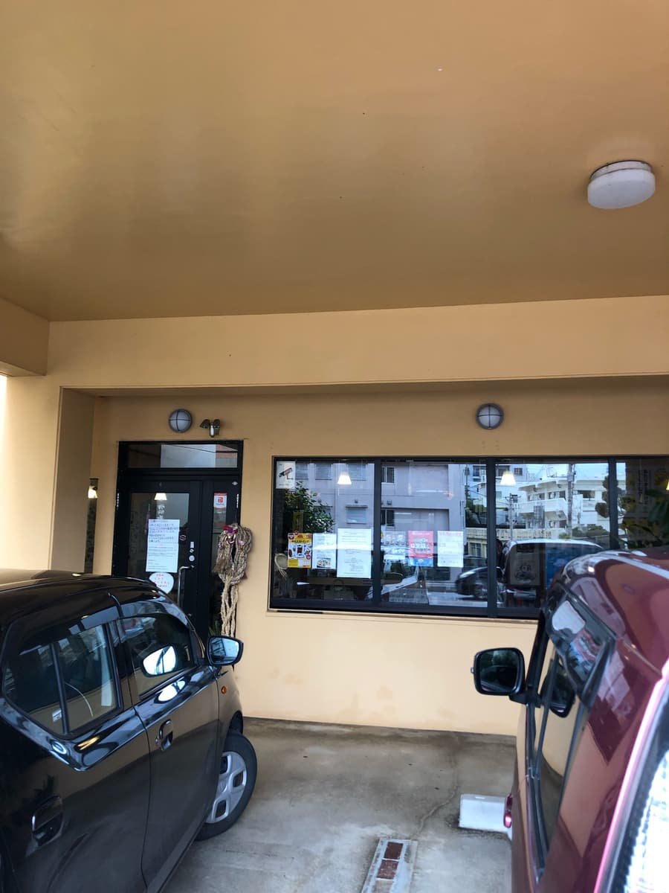
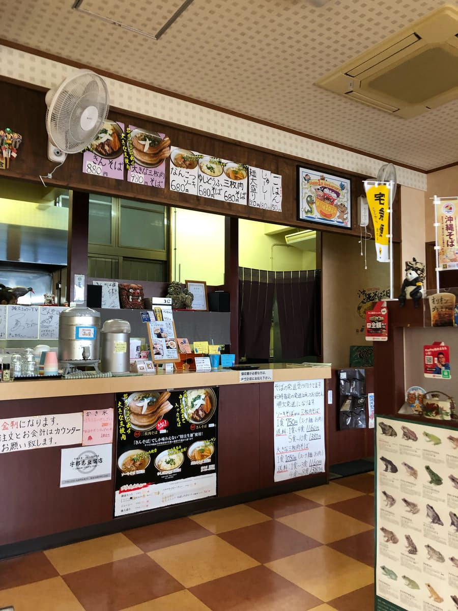
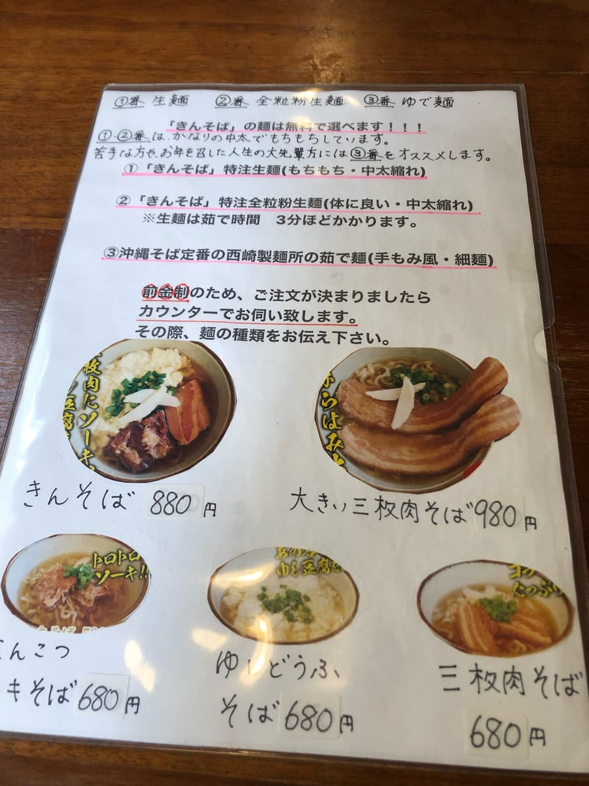
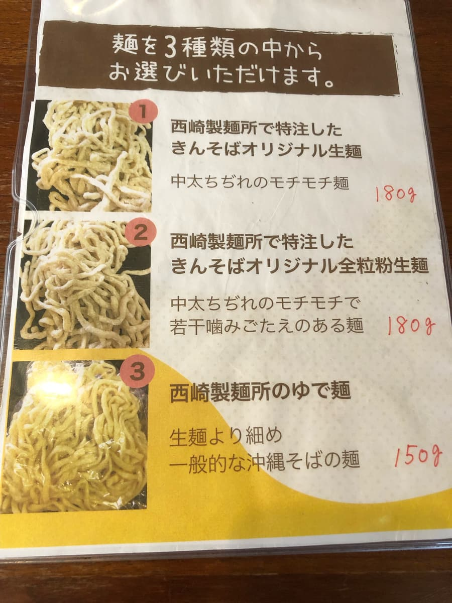
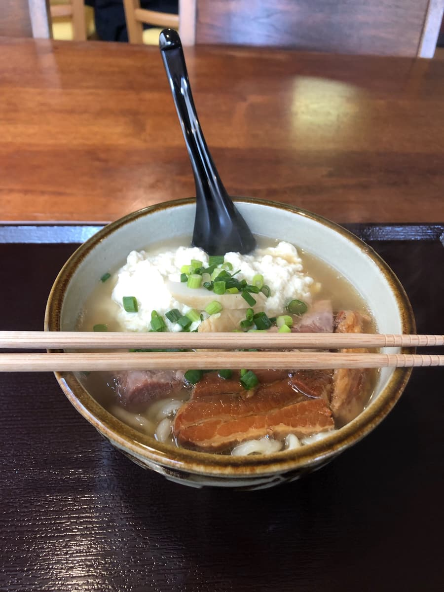
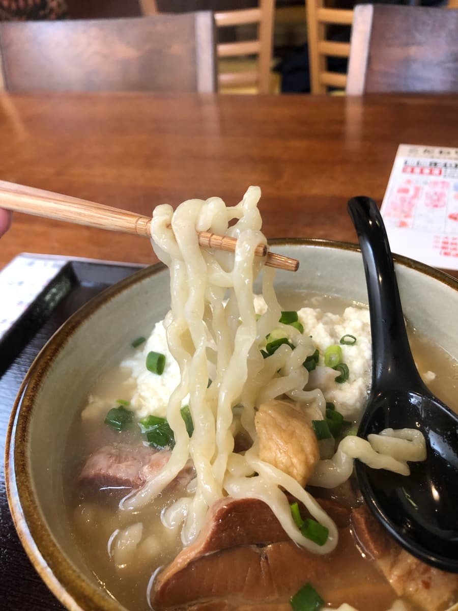

2023年12月吃的。這間店是「第13屆沖繩麵集章活動（2023.10.1～2024.2.29）」的參加店家，是我去的第29間／34間😊


這間店11點開門，所以配合開門時間過來，結果店門前3台份的停車位竟然一下子就停滿了(^0^;)
我覺得這是間人氣店😄

這間店是先付款制，在櫃台付錢。就像集章活動手冊的介紹也寫著「柴魚偏重的高湯中調配了昆布和雞骨的湯頭！」，店裡飄著柴魚底的香味🤤 光聞味道就覺得湯頭很好喝。
這次點了集章活動手冊上介紹的「きん麵」。而且也支援無現金支付（PayPay），能快速付款也很不錯😆


這間「きんそば」是從西崎製麵所的3種麵中選擇的方式。問了店員推薦哪種，回答是「1號（生麵）和2號（全麥生麵）比較常被點」，所以想說果然還是推薦1號吧，就選了「生麵」ｗｗ

從集章活動手冊的介紹和店裡飄散的柴魚高湯香味，就知道是柴魚高湯，然後喝一口湯。絕對沒錯，是柴魚高湯味道很明顯的美味湯頭😋

接著吃生麵。帶有透明感的麵是中粗、Q彈的口感。這個也很好吃。口感像烏龍麵一樣滿粗的，很有咬勁😄
接著是配料，宇那志豆腐店的沖繩嫩豆腐。能感受到豆腐的風味，這個也很好吃。覺得好像是剛做好、現做的豆腐。
不過，配料中可惜的是肉(^0^;) 三層肉還留有筋感，覺得還差一點點。
評分（10.5分/15分）：柴魚高湯偏重的湯頭、Q彈的生麵、沖繩嫩豆腐，都覺得非常好吃。可惜的是肉有筋感，很浪費呢。店內也有好幾個簽名，我覺得是人氣店，但停車場好像也很少，所以或許推薦剛開門的時候來。
我覺得是至今吃過的那霸市首里地區沖繩麵店中最好吃的，大家要不要也來一次看看呢？
麵：★★★✬☆（3.5）
湯頭：★★★✬☆（3.5）
配料：★★★✬☆（3.5）